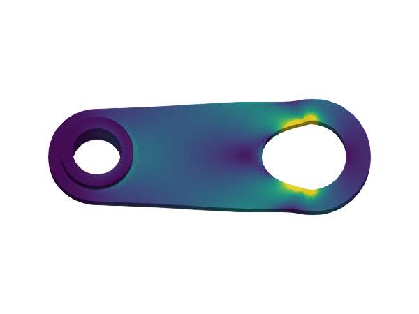

Linear elasticity

Problem statement
Implementation
using LinearAlgebra
using StaticArrays
import Gmsh
import GalerkinToolkit as GT
import Tensors
import LinearSolve
import ForwardDiff
import GLMakie as Makie
#Read the mesh file
assets_dir = normpath(joinpath(@__DIR__,"..","..","..","assets"))
msh_file = joinpath(assets_dir,"solid.msh")
mesh = GT.mesh_from_msh(msh_file)
#Computational domains
material_1 = "material_1"
material_2 = "material_2"
surface_1 = "surface_1"
surface_2 = "surface_2"
Ω = GT.interior(mesh;group_names=[material_1,material_2])
Γ = GT.boundary(mesh;group_names=[surface_1,surface_2])
#Vector-valued mask telling which components
#of the solution on Γ are enforced
#with Dirichlet conditions
piecewise = Val(true)
mask = GT.analytical_field(Γ;piecewise) do x,name
if name === surface_1
SVector(true,true,false)
elseif name === surface_2
SVector(true,true,true)
end
end
#Create interpolation space
order = 2
tensor_size = Val((3,))
dirichlet_boundary = mask
V = GT.lagrange_space(Ω,order;tensor_size,dirichlet_boundary)
#Dirichlet displacements
#NB. The third component on surface_1
#will be ignored according to the mask above
ud = GT.analytical_field(Γ;piecewise) do x,name
if name === surface_1
δ = 0.005
SVector(δ,0.,0.)
elseif name === surface_2
SVector(0.,0.,0.)
end
end
#Interpolate Dirichlet function
uhd = GT.interpolate_dirichlet(ud,V)
#Material dependent parameters
params = GT.analytical_field(Ω;piecewise) do x,name
if name === material_1
E=70.0e9
ν=0.33
elseif name === material_2
E=200.0e9
ν=0.33
end
λ = (E*ν)/((1+ν)*(1-2*ν))
μ = E/(2*(1+ν))
(λ,μ)
end
#Definition of strain
function ε(∇u)
Tensors.symmetric(Tensors.Tensor{2,3}(∇u))
end
#Definition of stress from strain
function σ(ε,params)
λ = params[1]
μ = params[2]
λ*tr(ε)*one(ε) + 2*μ*ε
end
#von-Misses stress for visualization
function σv(σ)
J2 = (1/2)*tr(σ⋅σ) - (1/6)*tr(σ)^2
sqrt(3*J2)
end
#Weak form
degree = 2*order
dΩ = GT.quadrature(Ω,degree)
a = (u,v) -> begin
GT.∫(dΩ) do x
∇_v = GT.jacobian(v,x)
∇_u = GT.jacobian(u,x)
ε_v = GT.external(ε,∇_v)
ε_u = GT.external(ε,∇_u)
σ_u = GT.external(σ,ε_u,params(x))
GT.external(Tensors.dcontract,σ_u,ε_v)
end
end
l = 0
#Solver phase
problem = GT.SciMLBase_LinearProblem(uhd,a,l)
solution = LinearSolve.solve(problem)
uh = GT.solution_field(uhd,solution)
#Prepare figure
fig = Makie.Figure()
elevation = 0.4π
azimuth = -0.5π
aspect = :data
ax = Makie.Axis3(fig[1,1];aspect,elevation,azimuth)
Makie.hidespines!(ax)
Makie.hidedecorations!(ax)
#Visualze the domain warp by the displacement
#and color by von Misses stress
warp_by_vector = uh
warp_scale = 30
color = x-> begin
∇_uh = GT.jacobian(uh,x)
ε_uh = GT.external(ε,∇_uh)
σ_uh = GT.external(σ,ε_uh,params(x))
GT.external(σv,σ_uh)
end
colorrange = (0.0,5e8)
GT.makie_surfaces!(ax,Ω;color,colorrange,warp_by_vector,warp_scale)This page was generated using Literate.jl.